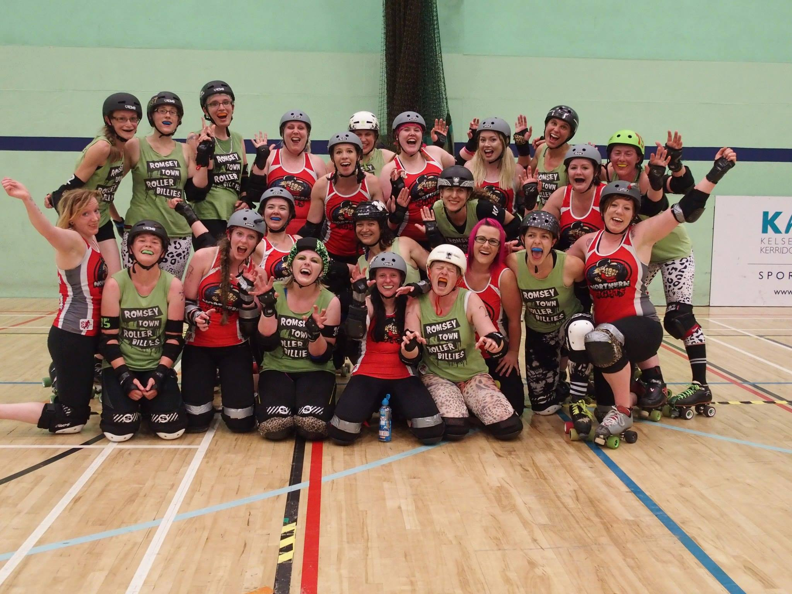
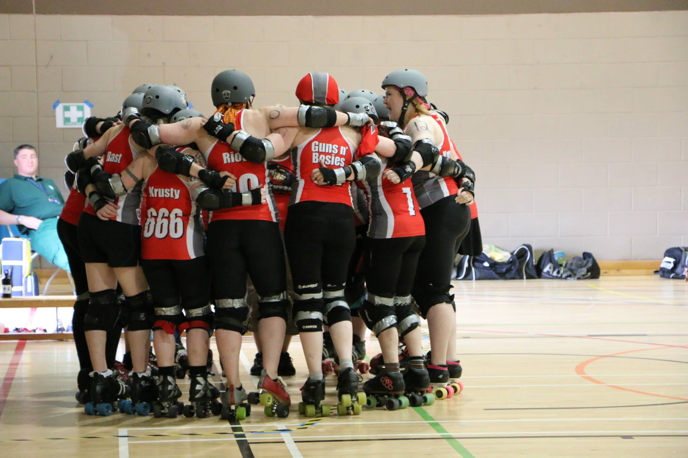

Granite City Roller Girls - A Roundup of 2014
I transferred to Granite City Rollergirls in February 2014 and have been lucky enough to spend a fun filled (almost) year with the league.
It's been a busy year for GCRG! We have had a few changes to the league, some friends left for pastures new, some returned and we got some amazingly talented new teammates and referees.
There has been many promotion opportunities for us including the Discover Aberdeen dolphins and live demonstrations in the Bon Accord Centre.
Granite City Roller Girls official logo
Our final game of 2014 against Bedforshire's Rebellion Roller Derby was a fantastic game to watch. The team really pulled together and used every skill that they had been working on and ended our bouting year on a high with a win of 184 to 155.
I think the whole league will agree that one of our highlights of 2014 was cheering our wee hearts out for Jill Stephen (Fight Cub), Jill Simpson (Rock n Riot), and Carolyn Mackenzie (Clinically Wasted) when they represented GCRG in Team Scotland at the Blood and Thunder Roller Derby World Cup.
We ended 2014 with an annual Skateroonie where fights, refs and newbies got together to play games, eat food and more importantly, play tug of war (the girls took victory ). This was followed a few days later with a league night out to end 2014 appropriately.
My own highlight for 2014 was playing my debut game as a Northern Fight against Hull. There was a great atmosphere and I was super proud to represent the Fights for the first time. Any occasion where we get together whether to skate or just have a nice time is always a highlight.
 Photo credit: Caroline Allison
As a mentor for our fresh meat I have the luxury of seeing our newbies turn from timid wee lambs into confident team mates. The structure of fresh meat training has changed so you can really see the progress from one week to the next. I'm so excited to see what the future holds for our newbs! They will be taking part in their first team scrimmage in January and I for one will be beaming with pride...and just a wee warning that I shall probably cry proud little tears.
Next year promises to be an exciting whirlwind for GCRG as we will be taking part in British Championships Heartland series! Some of our eagle eyed readers may have seem the recent announcement of GCRG's B team. There is so much to come and I'm excited!
Finally, I spoke to GCRG's captain for 2015, Mental, about what the roller derby community can expect from GCRG next year;
"From the start of 2015 we have entered the British Championships, these are very exciting times for GCRG. For me personally I've got big boots to fill but I believe if you put in 100% you get 100%. I can see a more focussed, determined and stronger team for 2015"
 Photo credit: Andy Morris

{kind=link}
{kind=link}
{kind=link}